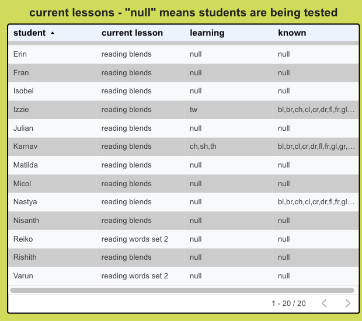
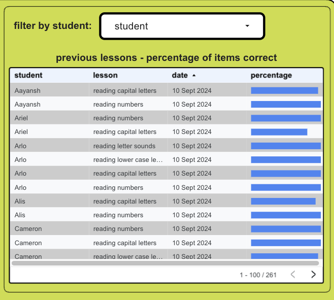
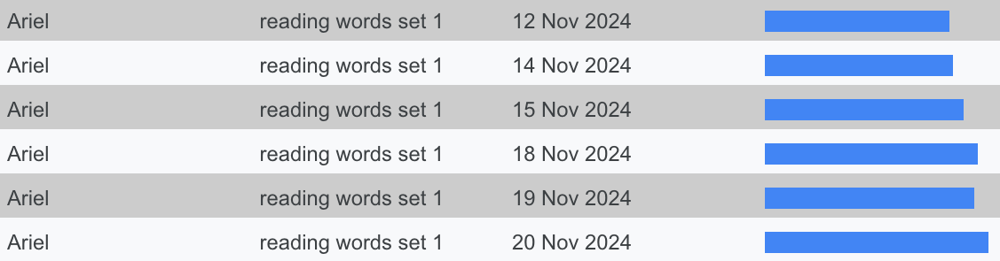
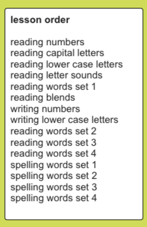
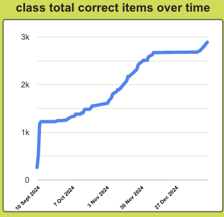
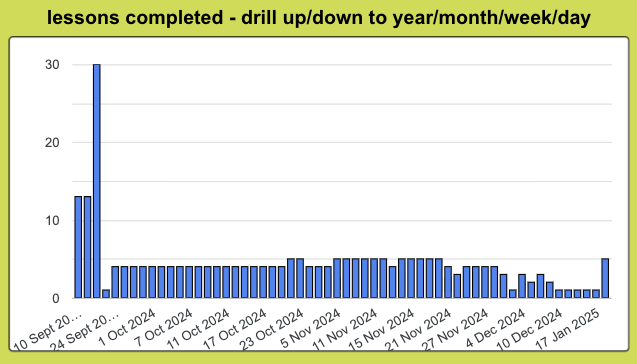
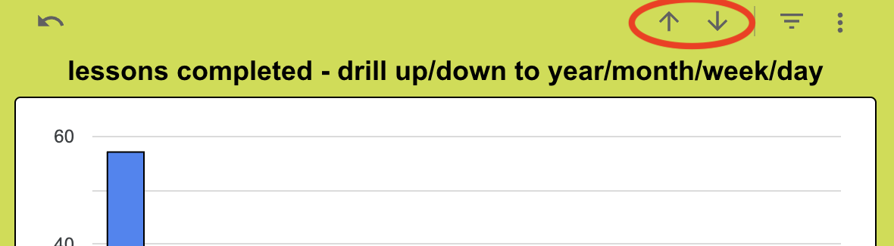
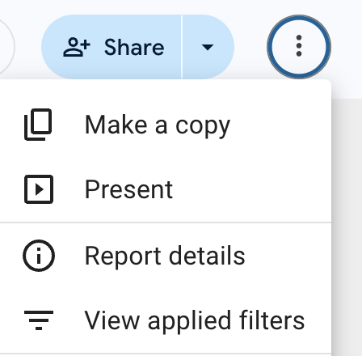

This is my final dashboard assignment for the Visualising Data module.
Please go ahead and explore this interactive dashboard for visualising student flashcard progress! There's an instruction manual below.
This manual explains how to use the Flashcards Dashboard for the Flashcards Web App. The app boosts early reading and writing with personalised flashcards for students. The flashcards teach numbers, letters, words, number formation, letter formation, and spelling.

The current lessons table shows which set of flashcards each student is currently working on. The “learning” column shows which items from the current set of flashcards the student is learning, and the “known” column shows which items the student already knows. A value of “null” means the student is on a “testing” round - on the student’s next lesson, all items from the current set of flashcards will be tested.
You can sort the table by clicking at the top of any column - click again to sort in descending order. (It’s probably most useful to sort by student name.) You can sort by multiple columns by holding Shift as you select.
If you right-click on the table you can use advanced options such as freezing columns and exporting.

The previous lessons table shows results from all previous lessons for all students. The percentage column shows the percentage correct from that set of flashcards, so it’s easy to see progress within a set of flashcards over time - here’s an example showing one student's progress with “reading words set 1”.

You can show a single student’s results using the drop-down menu at the top. Click on the student in the menu again to go back to showing all students.
You can sort the table by clicking at the top of any column - click again to sort in descending order. You can sort by multiple columns by holding Shift as you select.
If you right-click on the table you can use advanced options such as freezing columns and exporting.

The lesson order table shows the default order for the sets of flashcards. This helps determine where students are in the overall order of lessons, for example, if a student’s current lesson is “reading blends”, he or she has finished 5 sets of flashcards and has 10 sets to go.

This chart shows how many items in total the class has learned over time. In the default sets of flashcards there are 399 items in total, so for a class of 20 students the grand total would be 7980 items to learn.
You can hover over the trend line to get the details of a particular date.
If you right-click on the chart you can use advanced options such as exporting and linking.

This chart shows how many lessons were completed by the class by time period - day, week, month or year. You can drill up or down to different time periods by hovering on the chart, then clicking on the arrows at the top right.

You can hover over a bar to get the details of a particular time period.
If you right-click on the chart you can use advanced options such as exporting and linking.
You can access other advanced options by clicking the 3 dots at the top right of the dashboard.
